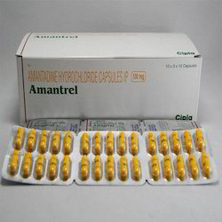

Amantadine ( Symmetrel )

Amantadine ဆိုတာဘာလဲ
Amantadine ဆိုတာ ခႏၶာကိုယ္အတြင္းရွိ ဗိုင္းရပ္စ္မ်ား၏ ႀကီးထြားမႈကိုရပ္ေစေသာ ဗိုင္းရပ္စ္သတ္ေဆးတစ္မ်ိဳး ျဖစ္ပါသည္။
ေဆးကို ဘယ္ေနရာေတြမွာ သံုးလဲ
တုပ္ေကြးေရာဂါမ်ားအား ကာကြယ္ျခင္းႏွင့္ ကုသျခင္းတို႔ မွာသံုးေလ့ရွိပါတယ္။ ထို႔အျပင္ Parkinson’s ေရာဂါႏွင့္ အခ်ိဳ႕ေသာ ေဆးမ်ား/ဓာတုေဗဒပစၥည္းမ်ား၏ ေဘးထြက္ဆိုးကိ်ဳးေၾကာင့္ျဖစ္ေသာ ေရာဂါမ်ား (ဥပမာ ေဆးေၾကာင့္ျဖစ္ေသာ အာရံုေၾကာေရာဂါ) တြင္ကိုယ္လက္ လႈပ္ရွားမႈကို ေကာင္းမြန္တိုးတက္ေစေသာေၾကာင့္ Amantadine ကိုသံုးေလ့ရွိပါတယ္။
ေဆးရဲ႕ဆိုးက်ိဳးဘာေတြရွိလဲ
- အျမင္ေဝဝါးျခင္း၊ ပ်ဳိ႕အန္၊ အစာမေၾကျခင္း၊ မူးေဝျခင္း၊ အာေခါင္ေျခာက္ျခင္း၊ ဝမ္းခ်ဳပ္ျခင္း၊ ဂနာမၿငိမ္ျဖစ္ျခင္း ႏွင့္ အိပ္မေပ်ာ္ျခင္းတို႔ကိုျဖစ္ေစႏိုင္ပါသည္။
- အေရျပားတြင္နီျပာေရာင္ အဖုမ်ားေပါက္ျခင္း၊ ေျခက်င္းဝတ္မ်ားေရာင္လာျခင္း၊ ဆီးသြားရခက္ျခင္း ႏွင့္အျမင္ေဝဝါးျခင္းတို႔ျဖစ္ပါက နီးစပ္ရာေဆးခန္းသို႔အျမန္ဆံုးသြားျပပါ။
- ေဆးမတည့္ျခင္းျဖစ္ႏိုင္ေသာ္လည္းရွားပါတယ္။ၾကံဳေတာင့္ၾကံဳခဲျပင္းထန္ေသာ ေရာဂါလကၡဏာေတြကေတာ့ အသက္ရွဴၾကပ္ျခင္း၊ စိတ္ခံစားမႈေျပာင္းလဲျခင္း (ဥပမာ စိတ္က်ျခင္း၊ သတ္ေသခ်င္စိတ္မ်ား ေပၚေပါက္လာျခင္း)၊ ႂကြက္သားမ်ားေတာင့္တင္းမႈ၊ မူမမွန္ႂကြက္သားလႈပ္ရွားမႈ၊မူမမွန္ေခၽြးထြက္ျခင္း၊ ႏွလံုးခုန္ျမန္ျခင္း ႏွင့္တက္ျခင္းတို႔ျဖစ္ကာ အျမန္ဆံုးေဆးကုသမႈခံယူသင့္ပါတယ္။
- Amantadine သည္ ႐ုတ္တရက္ အိပ္ငိုက္ျခင္းျဖစ္ႏိုင္ေသာေၾကာင့္ ေဆးေသာက္ၿပီး ကားေမာင္းျခင္းမျပဳလုပ္သင့္ပါ။
ေဆးေသာက္လွ်င္ ဘာေတြ သတိထားရမလဲ
- ေဆးမတည့္ျခင္း၊ မ်က္စိေရာဂါမ်ား၊ ေျခ/လက္ေရာင္ျခင္း၊ ႏွလံုးေရာဂါ၊ ေသြးေပါင္တက္/က်၊ ေက်ာက္ကပ္ေရာဂါ၊ အသည္းေရာဂါ၊ စိတ္ေရာဂါမ်ား၊ အတက္ေရာဂါ၊ အေရျပားေရာဂါ မ်ားရွိ/မရွိ ဆရာဝန္ကို ႀကိဳေျပာသင့္ပါတယ္။
- ႐ုတ္တရက္ အိပ္ငိုက္ျခင္းျဖစ္ႏိုင္ေသာေၾကာင့္ ေဆးေသာက္ၿပီးကားမေမာင္းသင့္ပါ။
- အရက္ေသာက္သူမ်ားလည္း ေဆးေသာက္ေနပါက အရက္ေလွ်ာ့ေသာက္သင့္ပါသည္။
- Parkinson’s ေရာဂါ အတြက္ Amantadine ေသာက္ေနရပါက ေလ့က်င့္ခန္းအား အလြန္အၾကဴး မလုပ္သင့္ပါ။
- ကိုယ္ဝန္ေဆာင္သည္မ်ားႏွင့္ ႏို႔တိုက္မိခင္မ်ားသည္ ဆရာဝန္ႏွင့္တိုင္ပင္ၿပီးမွ ေသာက္သံုးသင့္ပါသည္။
ေဆးအာနိသင္ ဘယ္လိုရွိလဲ
- Anticholinergic ေဆးမ်ား (ဥပမာ Atropine) ၊ Antihistamines မ်ား ( ဥပမာ diphenhydramine) ၊ စိတ္ေရာဂါအတြက္ေဆးမ်ား (Phenothiazine ဥပမာ Thioridazine)၊ Quinidine၊ Quinine ၊ စိတ္လႈံ ့ေဆာ္ေဆးမ်ား ( ဥပမာ Caffeine) ၊ Trimethoprim/ Sulfamethoxazole အစရွိေသာ ေဆးမ်ားႏွင့္ တြဲေသာက္လွ်င္ ေဆးအာနိသင္ ေျပာင္းကာ ေဘးျဖစ္ႏိုင္ပါသည္။
- ဆရာဝန္ႏွင့္ ဦးစြာတိုင္ပင္ၿပီးမွ ေသာက္သင့္ပါတယ္။
ေဆးေသာက္လြန္လွ်င္ ဘာျဖစ္ႏိုင္လဲ
- ႏွလံုးခုန္ျမန္/မူမမွန္ျခင္း၊ အလြန္အမင္းမူးေဝျခင္း၊ အသက္ရွဴၾကပ္ျခင္း၊ ဆီးပမာဏေျပာင္းလဲျခင္း၊ စိတ္ခံစားမႈေျပာင္းလဲျခင္း (ဥပမာ– စိုးရိမ္လြန္ျခင္း၊ စိတ္က်ျခင္း၊ ေတြေဝျခင္း၊ ထင္ေယာင္ ထင္မွားျဖစ္ျခင္း)၊ တက္ျခင္းတို႔ျဖစ္ကာ အႏၲရာယ္ရွိသျဖင့္ အျမန္ဆံုးေဆးကုသမႈခံယူသင့္ပါတယ္။
- သတိျပဳရန္မွာ Parkinson’s ေရာဂါအတြက္ Amantadine ေသာက္သံုးေနရသူမ်ားမွာ အေရျပားကင္ဆာ (Melanoma) ျဖစ္ႏိုင္ေခ်မ်ားေသာေၾကာင့္ မွဲ႔ပံုစံႏွင့္ အရြယ္အစားေျပာင္းလာျခင္း၊ အေရျပားတြင္ မူမမွန္ေျပာင္းလဲျခင္းတို႔ျဖစ္ပါက ဆရာဝန္အား အျမန္ဆံုးအေၾကာင္းၾကား တိုင္ပင္သင့္ပါသည္။
Source– ေဒါက္တာအိမ့္ခ်ယ္ရီ